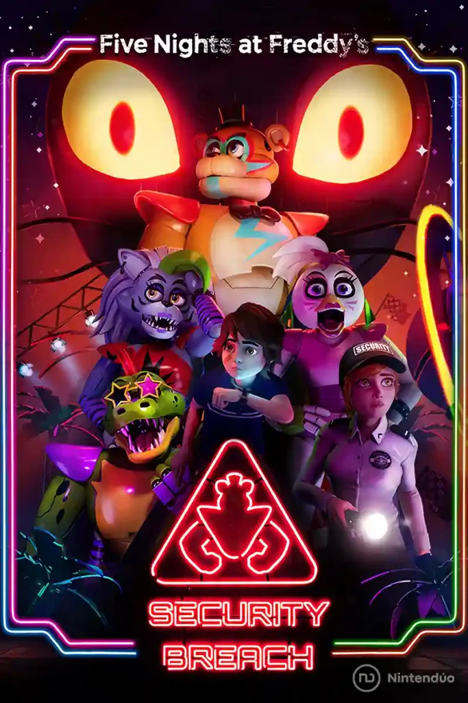
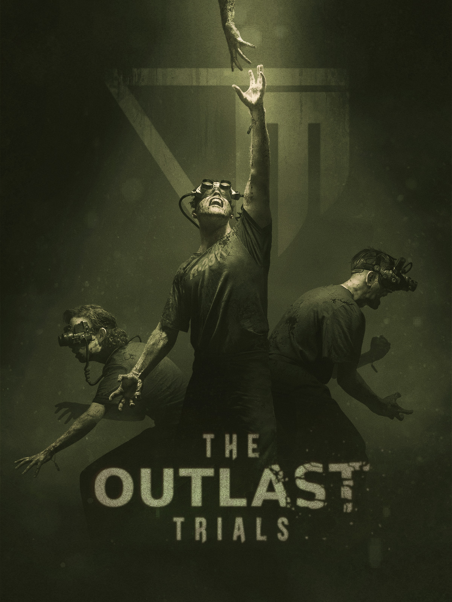

Videojuegos
 los videojuegos conforman una parte del uso de mi tiempo al dia y son una buena forma de entretenimiento, pero despues me pregunto. ¿Por que me gusta jugar?
¿Que me llama la atencion los videojuegos? Aunque sean preguntas muy simples, cada persona podria responder de maneras diferentes,
y cada persona desarrolla cierto gusto hacia un genero de videojuegos.
los videojuegos conforman una parte del uso de mi tiempo al dia y son una buena forma de entretenimiento, pero despues me pregunto. ¿Por que me gusta jugar?
¿Que me llama la atencion los videojuegos? Aunque sean preguntas muy simples, cada persona podria responder de maneras diferentes,
y cada persona desarrolla cierto gusto hacia un genero de videojuegos.
¿Por que me gustan los videojuegos?
En lo personal, a mi me gustan mucho los videojuegos, ya que me resultan una muy buena distracción y tambien es genial, a mi me gustan bastante los de genero Mundo Abierto, FPS, Terror, Conduccion, Construccion, Battle Royale, Supervivencia, Simulación y muchos mas.
¿Cuanto tiempo juego videojuegos?
No juego de manera excesiva, trato de mantener una duración de juego sana tanto de forma mental como de forma fisica, juego solamente cuando estoy libre y no tengo ningun tipo de actividad pendiente.
Juegos Favoritos

Portal 2
En el modo de un jugador de Portal 2 conoceremos a un nuevo elenco de personajes, gran cantidad de innovadores puzles y un número mucho mayor de enrevesadas salas de pruebas. Los jugadores podrán explorar zonas de Aperture Science Labs nunca vistas anteriormente y volverán a encontrarse a GLaDOS, ese compañero computerizado, y en ocasiones con tendencias asesinas, que los guió a lo largo el juego original.

Five Nights At Freddy's: Security Breach
Five Nights at Freddy's: Security Breach es la última entrega de la saga de juegos de terror para toda la familia que ha cautivado a millones de jugadores en todo el mundo. Juega con Gregory, un joven que pasa la noche atrapado en Freddy Fazbear's Mega Pizzaplex. Con la ayuda del mismísimo Freddy Fazbear, Gregory debe sobrevivir a la inagotable cacería de las nuevas versiones de los personajes de Five Nights at Freddy's y a una serie de amenazas igualmente terroríficas.

Valorant
Valorant es un juego de disparos en primera persona en el que dos equipos de cinco jugadores se enfrentan entre ellos. Además de los consabidos tiros, el objetivo de las partidas es colocar un dispositivo llamado Spike en una zona concreta del mapa.
Minecraft
Minecraft es un videojuego de mundo abierto donde la exploración y las construcciones son fundamentales. ... Al ser un videojuego de mundo abierto, no tiene una misión concreta (salvo alguno de sus modos de juego) y consiste en la construcción libre mediante el uso de cubos con texturas tridimensionales.

Outlast
Outlast es un videojuego de terror en primera persona desarrollado por Red Barrels, una compañía fundada por antiguos miembros del equipo de desarrolladores de otros juegos como Prince of Persia, Assassin's Creed, Splinter Cell y Uncharted.

Hitman 3
Hitman 3 es una nueva entrega de la saga de aventura y acción protagonizada por el Agente 47 a cargo de IO Interactive para PC, PlayStation 4, Xbox One, PlayStation 5, Xbox Series X y Stadia. La muerte te espera. El Agente 47 regresa en el espectacular cierre de la trilogía de Mundo del asesinato.